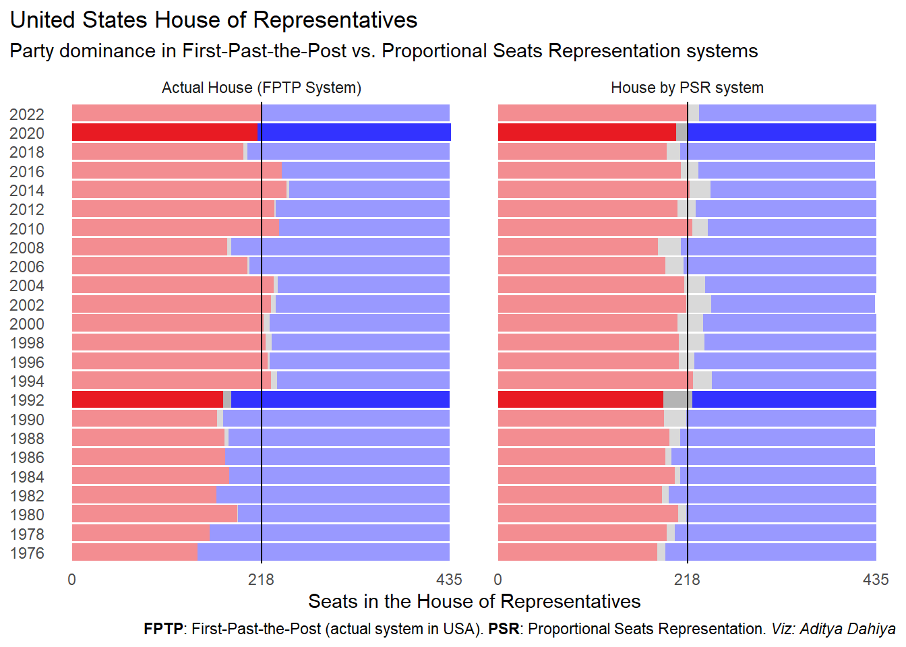

Electoral Kaleidoscope: Visualizing the Impact of Proportional Representation
How the PSR System could’ve changed the 1992 and 2020 US House of Representatives majority party!
#TidyTuesday
Data Visualization
Author
Aditya Dahiya
Published
November 12, 2023
In the thrilling world of elections, there are two main contenders duking it out for the title of “Best Voting System”: the classic First-Past-the-Post (FPTP) and the avant-garde Proportional Seats Representation (PSR).
Think of FPTP as the sprinter, the first to cross the finish line takes it all, while PSR is more like a democratic marathon, ensuring everyone’s voice is heard. Or, imagine you’re at a pizza party—FPTP would be that one friend who grabs the last slice before you even realize it’s up for grabs, while PSR ensures everyone gets a fair share of the cheesy goodness.
Now, let’s dive into the wild world of U.S. House of Representatives elections from 1976 to 2022 and see how these systems have been throwing their punches in the political ring. The data comes from the MIT Election Data and Science Lab (MEDSL), and from the MEDSL’s report New Report: How We Voted in 2022. I’ll be specifically working on the data on House elections from 1976-2022 downloaded from the Harvard Dataverse.
Code
# Load libraries and datalibrary(tidyverse) # all things tidylibrary(shiny) # shiny applibrary(sf) # for mapslibrary(ggparliament) # for parliament seats plotslibrary(gganimate) # to create animationslibrary(gt) # gt tableslibrary(gtExtras) # nicer gt tableslibrary(RColorBrewer) # colours# Using the Option of Reading data directly from GitHub# house <- readr::read_csv('https://raw.githubusercontent.com/rfordatascience/tidytuesday/master/data/2023/2023-11-07/house.csv')# write_csv(house, file = here::here("docs", "house.csv"))# For faster loading times, I have saved the interim tibbles as csv# and simply loading them, hoever, all the code to generate the following csv# are given belowmap_data <-read_csv(here::here("docs", "map_data.csv"))totalparl <-read_csv(here::here("docs", "totalparl.csv"))propparl <-read_csv(here::here("docs", "propparl.csv"))
Data Analysis and Tools
To unravel the secrets hidden within the labyrinth of U.S. House of Representatives election results from 1976 to 2022, I’ve armed myself with an arsenal of R tools: tidyverse(Wickham et al. 2019) tools and a few trusty sidekicks: sf(Pebesma and Bivand 2023) to map out the results, and ggparliament(Hickman, Meers, and Leeper 2018) and gganimate(Pedersen and Robinson 2022) to add some visual spice, and gt(Iannone et al. 2023) and gtExtras(Mock 2023) step in for a dash of elegance. If you wish to peek behind the curtain and explore the data science magic, just hit the “Code” button.
Code
# Read the CSV file from the specified URL using the readr packagehouse <- readr::read_csv('https://raw.githubusercontent.com/rfordatascience/tidytuesday/master/data/2023/2023-11-07/house.csv')# Visualize the structure and missing values of the data using the visdat packagevisdat::vis_dat(house)# Generate a summary report of the data using the dfSummary function from the summarytools packagesummarytools::dfSummary(house)
Each election result over time: 1976 - 2022
This animated bar chart is a mesmerizing dance of political prowess. It reveals the ebb and flow of seats won by the dynamic duo of the two main parties in each biennial election from 1976 to 2022. It seems the stage is monopolized by the headliners, leaving the “Other” party contenders with no representation.
Code
# Define a vector containing the names of the main political partiesmain_parties <-c("DEMOCRAT", "REPUBLICAN")# Create a new dataframe 'h1' using the magrittr pipe operator %>%h1 <- house |># Group the data by state, district, and yeargroup_by(state, district, year) |># Add new columns: prop_votes (proportion of votes), victory (boolean indicating victory), partymutate(prop_votes = candidatevotes / totalvotes,victory = (prop_votes ==max(prop_votes)),party = party,.keep ="used" ) |># Remove groupingungroup()# Create a new dataframe 'ganim' using the magrittr pipe operator %>%ganim <- h1 |># Filter rows where 'victory' is TRUEfilter(victory) |># Group the data by 'year' and count the occurrences of each 'party'group_by(year) |>count(party) |># Remove groupingungroup() |># Mutate columns: convert 'party' to title case, convert to factor, and lump categories to top 2mutate(party = snakecase::to_title_case(party),party =fct(party),party =fct_lump_n(party, n =2) ) |># Create a ggplot visualizationggplot(aes(x = n, y =fct_rev(party), fill = party)) +geom_col() +geom_vline(xintercept =218, lwd =1, alpha =0.2) +facet_wrap( ~ year) +scale_fill_manual(values =c("blue", "red", "darkgrey")) +labs(x ="Seats in House of Representatives", y =NULL,title ='Year: {closest_state}') + ggthemes::theme_clean() +theme(legend.position ="none",axis.line.y =element_blank(),plot.background =element_rect(colour ="white"),plot.title =element_text(size =36, hjust =0.5),axis.text =element_text(size =15) ) +facet_null() +# Create an animated transition over 'year' using gganimatetransition_states(year, transition_length =10, state_length =1) +enter_fade() +exit_fade()# Save the animated plot as a GIFanim_save( here::here("docs", "us_house_anim1.gif"),animation = ganim, fps =30, duration =45,end_pause =3)
Seats won Vs. the popular vote for the main two parties
Now, you’d think the seats would just follow the popular vote, right? Wrong! The graph below spills the beans on the popular vote percentages versus the actual seats won by the Democrat and Republican parties — the solid-colored lines show the seats won, and the faint, see-through ones are the actual percentage of popular votes!
Surprise, surprise, the winning party is always snagging more seats than its popular vote percentages would lead you to believe.
Code
# Number of seats for each party in the Congressh1a <- h1 |>filter(victory) |>group_by(year) |>count(party) |>filter(party %in%c("DEMOCRAT", "REPUBLICAN")) |>mutate(party =fct(party, levels =c("DEMOCRAT", "REPUBLICAN")))# Number of votes for each party in that electionh1b <- h1 |>group_by(year, party) |>summarise(votes =sum(candidatevotes) ) |>mutate(prop_votes = votes /sum(votes)) |>filter(party %in% main_parties) |>mutate(party =fct(party, levels =c("DEMOCRAT", "REPUBLICAN"))) |>ungroup()# A multiplication factor for the dual y-axissec_axis_factor =435ggplot(data = h1a, aes(x = year, y = n, col = party)) +geom_line() +geom_point() +geom_line(data = h1b, aes(y = prop_votes*sec_axis_factor), lty =2, alpha =0.4) +geom_point(data = h1b, aes(y = prop_votes*sec_axis_factor), alpha =0.2) +geom_hline(aes(yintercept = sec_axis_factor/2), alpha =0.2, lwd =0.5) +scale_color_manual(values =c("blue", "red")) +scale_x_continuous(breaks =unique(h1 |>pull(year))) +scale_y_continuous(sec.axis =sec_axis(trans =~./(sec_axis_factor/100), name ="Percentage of Popular Vote (% votes polled)") ) +labs(x =NULL, y ="Number of seats won",title ="Winning party almost always has a lower share of popular vote than number of seats reflect") +theme_minimal() +theme(panel.grid.minor =element_blank(),panel.grid.major.y =element_blank(),axis.text.x =element_text(angle =90),legend.position ="none", plot.title.position ="plot")
Figure 1: Seats and Popular Vote Percentage for the two major US parties
Popular Vote % for the party controlling the House
Now, this graph depicts the percentage of popular votes snagged by the party in control of the House each year. Brace yourselves for a mind-bender — out of the 24 times people cast their votes for the House of Representatives, a whopping nine times saw the winning party clutching victory with less than 50% of the popular vote.
Code
# A tibble of party controlling the congress each bi-year (party_in_power)p_in_p <- h1 |># taking only victorious candidatesfilter(victory) |># number of seats won by each partycount(year, party) |># add a column of total number of seatsgroup_by(year) |>mutate(total_seats =sum(n)) |>rename(seats = n) |>mutate(control = seats/total_seats >0.5) |>filter(control) |>select(year, party) |>rename(party_in_power = party)# Computing percetnage of people who voted for winning partyh1 |>left_join(p_in_p) |>mutate(victory =if_else(party == party_in_power,"Victorious Party","Others",missing ="Others")) |>group_by(year, victory) |>summarise(votes =sum(candidatevotes)) |>mutate(prop = votes /sum(votes)) |>filter(victory =="Victorious Party") |>mutate(col_prop = prop <0.5) |># Plot the votes percentageggplot(aes(x = year, y = prop)) +geom_point(aes(col = col_prop)) +geom_line(lty =2, lwd =0.2) +geom_hline(yintercept =0.5, col ="grey", alpha =0.5,lty =2) +scale_x_continuous(breaks =unique(h1 |>pull(year))) +scale_y_continuous(labels = scales::percent_format(),limits =c(0.4, 0.6)) +scale_color_manual(values =c("black", "red")) +labs(x =NULL, y ="% Votes polled for Party controlling the House",col =NULL,title ="The ruling party did not have the majority popular vote in 9 out of 24 Houses") +theme_minimal() +theme(panel.grid.minor =element_blank(),panel.grid.major.y =element_blank(),axis.text.x =element_text(angle =90),legend.position ="none",plot.title.position ="plot")
The numbers
Now, diving deep into the hypothetical world of proportional representation in USA, ?@fig-gt-table shows the difference between actual seats won versus the hypothetical seats each party would have snagged if USA used proportionality over the past four decades. We see two important revelations:
In nearly every election, those “Other Parties” would have bagged higher number of seats if USA had a proportional representation system. It’s like they’ve been waiting at the buffet, and FPTP just didn’t hand them enough plates!
And, in 1992 and 2020, the actual party ruling the House would have changed! Instead of the usual solo act, it would have been a coalition on the throne. Seems like the Democrats have been the belle of the FPTP ball, reaping more benefits from the current system.
Code
t1 <- totalparl |>select(year, party_long, seats) |>mutate(type ="Actual House (FPTP System)") |>bind_rows( propparl |>select(year, party_long, seats) |>mutate(type ="House by PSR system") ) # Finding out the years in which the majority party would have changedmaj =218change_years <- t1 |>mutate(party_long =if_else(type =="Actual House (FPTP System)", party_long,paste0(party_long, "_1"))) |>select(-type) |>pivot_wider(names_from = party_long,values_from = seats) |>mutate(Other =replace_na(Other, 0)) |>mutate(Dem_Gov = (Democrat >= maj) & (Democrat_1 >= maj),Rep_Gov = (Republican >= maj) & (Republican >= maj),Change =!xor(Dem_Gov, Rep_Gov) ) |>filter(Change) |>pull(year)t1 |>mutate(party_long =if_else(type =="Actual House (FPTP System)", party_long,paste0(party_long, "_1"))) |>select(-type) |>pivot_wider(names_from = party_long,values_from = seats) |>mutate(Other =replace_na(Other, 0)) |>mutate(Difference_D = Democrat_1 - Democrat,Difference_R = Republican_1 - Republican,Difference_O = Other_1 - Other ) |>mutate(across(everything(), na_if, 0)) |> gt::gt() |>tab_header(title ="Parties' representation in the House of Representatives",subtitle =md("**Actual seats Vs. Seats by popular vote**")) |>tab_source_note(source_note =md("_Data: MIT Election Data and Science Lab (MEDSL). House Elections: 1976-2022._") ) |>tab_spanner(label ="Actual House Results",columns =2:4) |>tab_spanner(label ="Hypothetical Seats by Popular Vote",columns =5:7) |>tab_spanner(label ="Change in seats, if using popular vote",columns =8:10) |>sub_missing(missing_text ="") |>cols_align(align ="center") |> gtExtras::gt_fa_rank_change(column = Difference_D, fa_type ="arrow") |> gtExtras::gt_fa_rank_change(column = Difference_R, fa_type ="arrow") |> gtExtras::gt_fa_rank_change(column = Difference_O, fa_type ="arrow") |>gt_highlight_rows(rows = year %in% change_years,fill ="lightgrey") |>cols_label(Democrat_1 =html("Democrat<sub>p</sub>"),Republican_1 =html("Republican<sub>p</sub>"),Other_1 =html("Other<sub>p</sub>"),year ="Year",Difference_D =html("Democrat<sub>c</sub>"),Difference_R =html("Republican<sub>c</sub>"),Difference_O =html("Other<sub>c</sub>"), ) |> gtExtras::gt_theme_538() |>gtsave(here::here("docs", "gt_us_house.png"))
To make it easier, I’ve conjured up a stacked bar chart that peels back the curtain on the electoral enchantment of a proportional representation system instead of the boring numbers above. As we see in Figure 2, in the spotlight are the pivotal years of 1992 and 2020, where the absence of a clear majority would have ushered in a coalition government. Also, take a gander at the spectrum of colors, especially that prominent shade of grey—it’s the chorus of “Other Parties” belting out their potential under a proportional system. They’re like the unsung heroes finally stepping into the limelight!
Code
cap_plot <-md("**FPTP**: First-Past-the-Post (actual system in USA). **PSR**: Proportional Seats Representation. _Viz: Aditya Dahiya_")t1 |>mutate(alpha_year = year %in% change_years,year =as_factor(year), ) |>ggplot(aes(x = seats, y = year, fill = party_long,alpha = alpha_year)) +geom_col(position ="stack") +geom_vline(xintercept =218) +scale_fill_manual(values =c("#3333FF", "#B4B4B4", "#E81B23")) +scale_x_continuous(breaks =c(0, 218, 435)) +scale_alpha_discrete(range =c(0.5, 1)) +facet_wrap(~ type) +labs(x ="Seats in the House of Representatives", y =NULL,title ="United States House of Representatives",subtitle ="Party dominance in First-Past-the-Post vs. Proportional Seats Representation systems",caption = cap_plot) +theme_minimal() +theme(panel.grid =element_blank(),legend.position ="none",plot.title.position ="plot",plot.caption = ggtext::element_markdown())

Figure 2: A stacked bar chart showing number of seats won by each party in elections 1976-2022 under FPTP & PRS systems
The two times that PSR would’ve changed majority party
To cap off our journey, let’s zoom in on the pivotal election years of 1992 and 2020, where the very fabric of majority rule would have been rewoven under a Proportional Seats Representation (PSR) system. In 1992, the Democratic majority would’ve been replaced with requirement of a coalition of sorts. Fast forward to 2020, and similar outcome would’ve arisen. But the real star of the show? Those grey coloured “Other Parties” section of the graphs below. In a PSR universe, they step into the limelight, their influence reaching far beyond regional boundaries. #PSRRevolution #TidyTuesday #ElectionEpilogue
1992: US House of Representatives Results
Code
input =NULLinput$year =1992us_map <- USAboundaries::us_congressional(resolution ="low") |># Extract District Numbermutate(district =parse_number(namelsad)) |>select(state_abbr, district, geometry) |>as_tibble() |># Correct encoding of districts to match our datamutate(district =replace_na(district, replace =0))map_data |># Join with the map geometry columnleft_join(us_map) |># Leave out non-continental USAfilter(!state_abbr %in%c("PR", "AK", "HI")) |>filter(year == input$year) |>ggplot(aes(fill = party, geometry = geometry)) +geom_sf(col ="white") +geom_text(aes(label = year, x =-75, y =48), size =12) +coord_sf() +scale_fill_manual(values =c("#3333FF", "#B4B4B4", "#E81B23")) +theme_void() +theme(legend.position ="none")
Iannone, Richard, Joe Cheng, Barret Schloerke, Ellis Hughes, Alexandra Lauer, and JooYoung Seo. 2023. “Gt: Easily Create Presentation-Ready Display Tables.”https://CRAN.R-project.org/package=gt.
Wickham, Hadley, Mara Averick, Jennifer Bryan, Winston Chang, Lucy D’Agostino McGowan, Romain François, Garrett Grolemund, et al. 2019. “Welcome to the Tidyverse” 4: 1686. https://doi.org/10.21105/joss.01686.